今天計劃從順天乘巴士往寶城(보성 Boseon)郡遊覽, 上午往寶城大韓茶園 (대한다원 Boseong Dawon Green Tea Field), 下午往我們最期望可能是秘景的「寶城大韓茶園．第二茶園」, 因為只安排了這兩個景點, 行程應該十分悠閒。
早上七時起床, 拉開窗簾看看, 天空放晴, 是郊遊的好日子。梳洗完畢, 往一樓餐廳吃早餐, 今早又只有我們兩個, 估計那四位來自瑞典的住客已經離開。早餐同樣是麵包、煎蛋、橙汁和奶茶。其實我們對早餐要求不高, 吃得飽便滿意。
吃完早餐, 返回房間收拾一些隨身攜帶的用品及旅遊資料, 於上午八時二十分走出賓館, 開始今天寶城的行程。按計劃, 我們首先往順天綜合巴士客運站 (순천 종합버스터미널)乘長途巴士往寶城, 然後轉乘另一部巴士往寶城大韓茶園。
順天東川
走出賓館, 沿馬路走一會, 便來到順天東川。晴天下的順天東川, 分外優美。
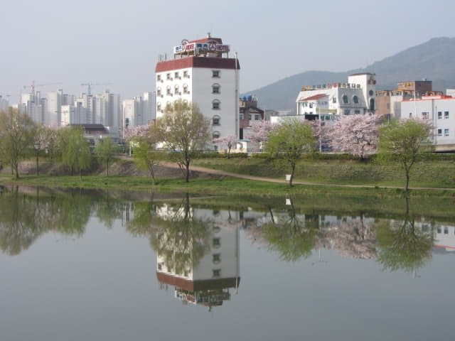
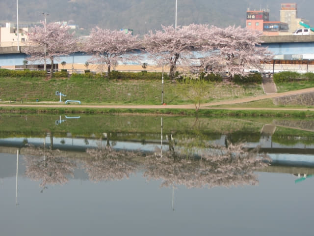
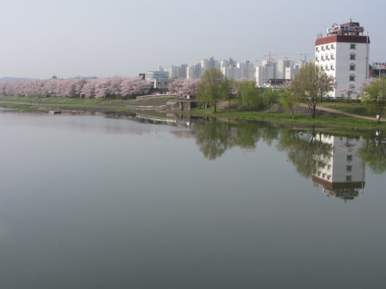
哈哈~~ 建於竹島峰頂的江南亭展望台 (강남정Kangnam Pavilion), 我們昨天便是在那裡俯瞰順天東川兩岸延綿櫻花, 還有在那裡欣賞順天優美黃昏和市區璀璨夜色。
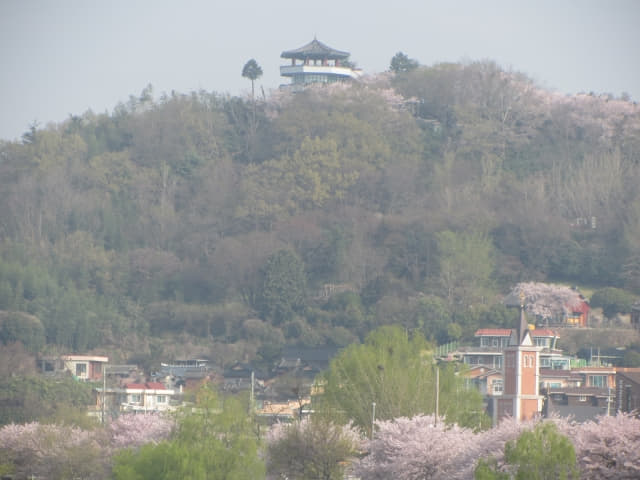
沿豐得橋往前走。
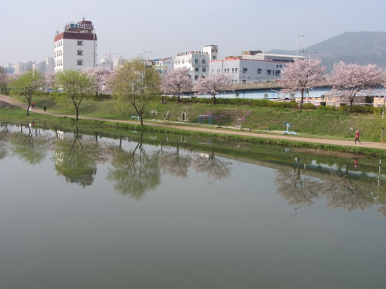
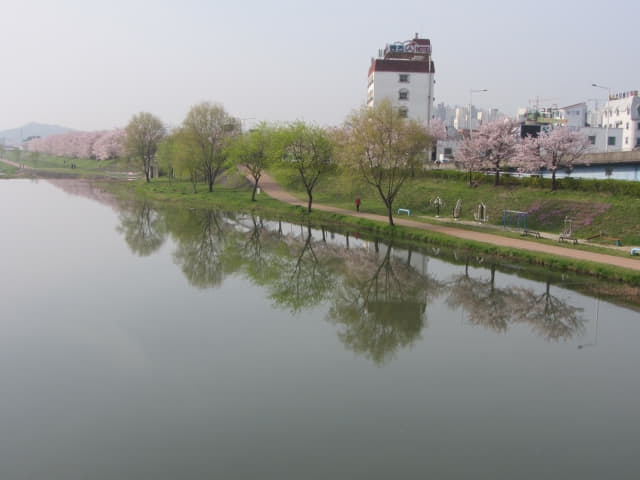
豐得橋頭的梅花仍然開得那麼燦爛。
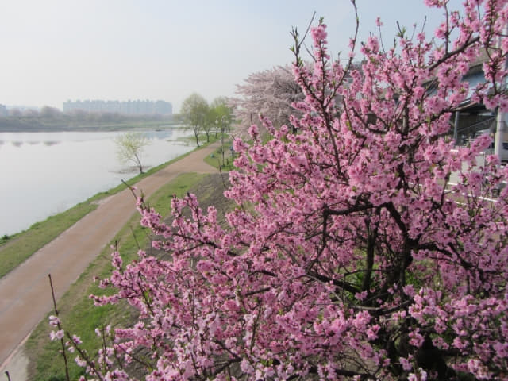
順天綜合巴士客運站
走過橫躺順天東川兩岸的豐得橋, 沿馬路繼續往前走一會, 約早上八時五十分便到達順天綜合巴士客運站。進入巴士站大樓, 往售票處買了兩張往寶城(보성 Boseon) 的巴士車票, 每位是 6,300 韓元, 頗貴的。沒有往寶城的巴士時間, 往 9 號月台等候便是。
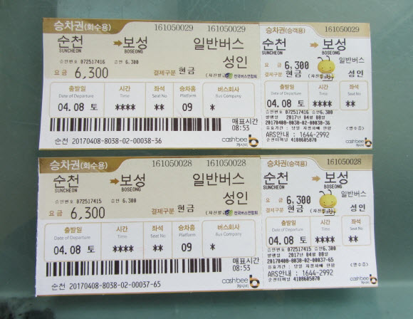
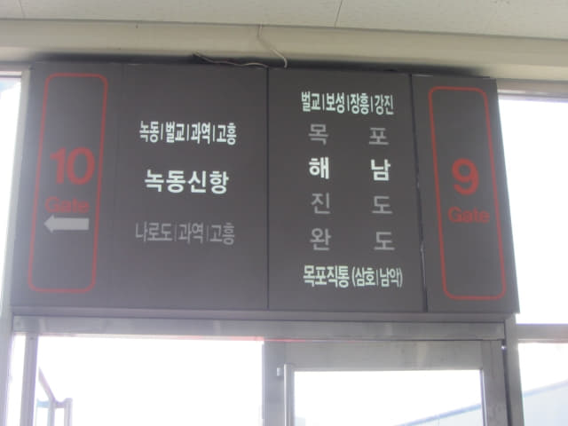
約早上九時十分, 一輛巴士駛進 9 號月台停靠, 將車票遞給車長看, 他示意可以上車。登上了車廂, 同樣只有幾位乘客, 十分舒適, 坐下來不久, 巴士便開出, 向寶城進發。
沿途停靠的巴士站。
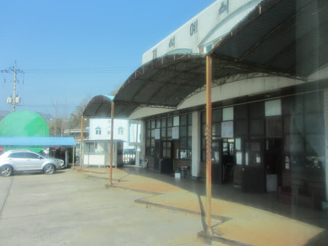
沿途的風景。
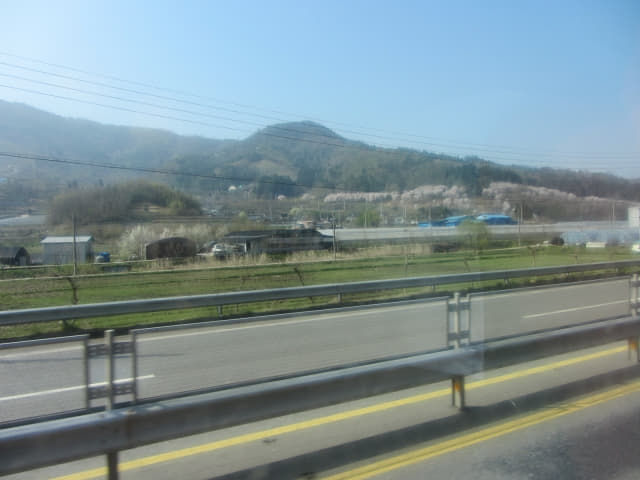
路旁有兩個好像世博娃娃的吉祥物。
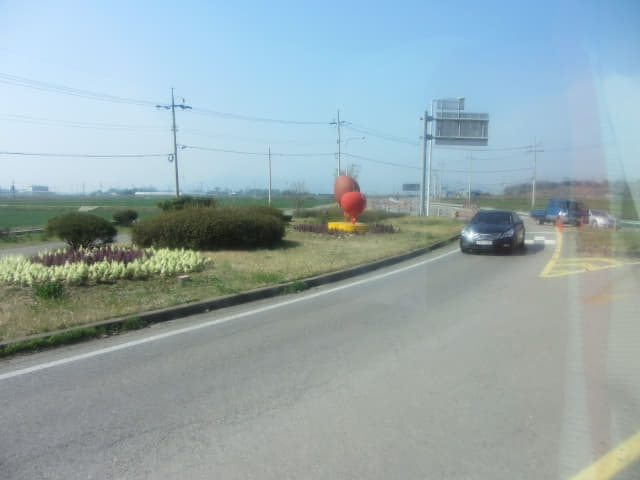
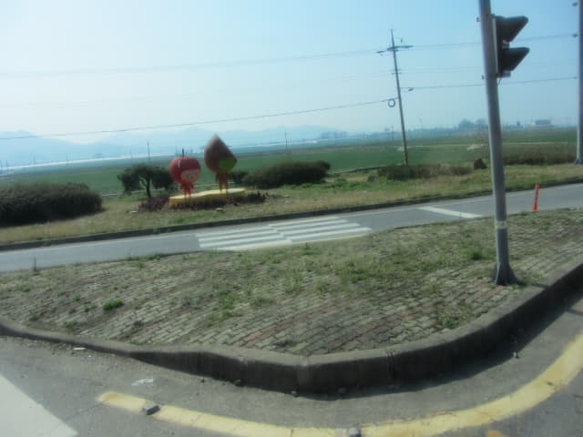
寶城長途汽車客運站 (보성 버스터미널)
巴士於上午十時十五分抵達寶城長途汽車客運站, 車程約一小時。